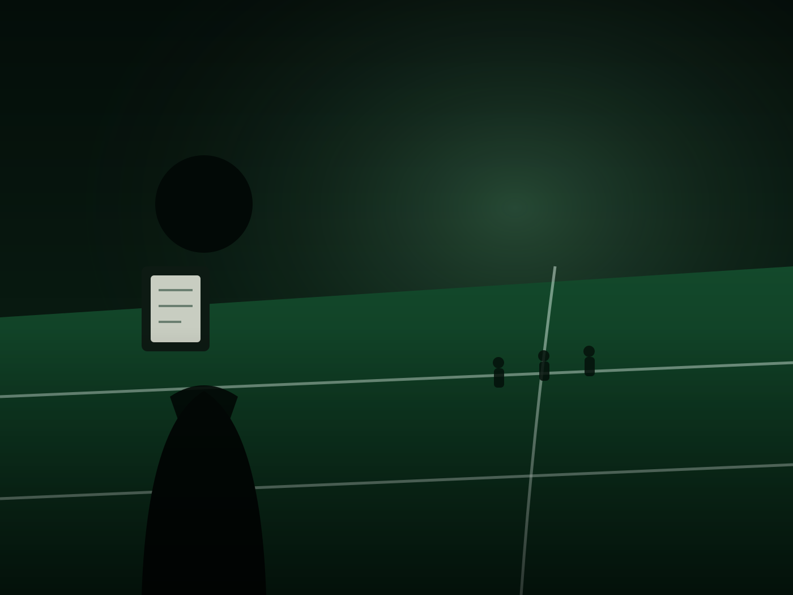
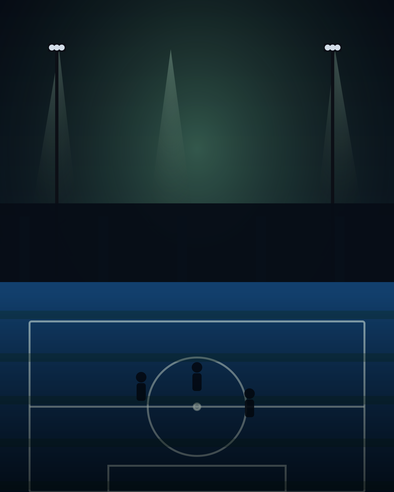
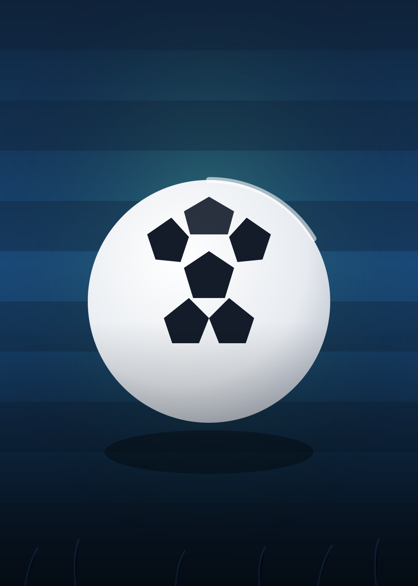
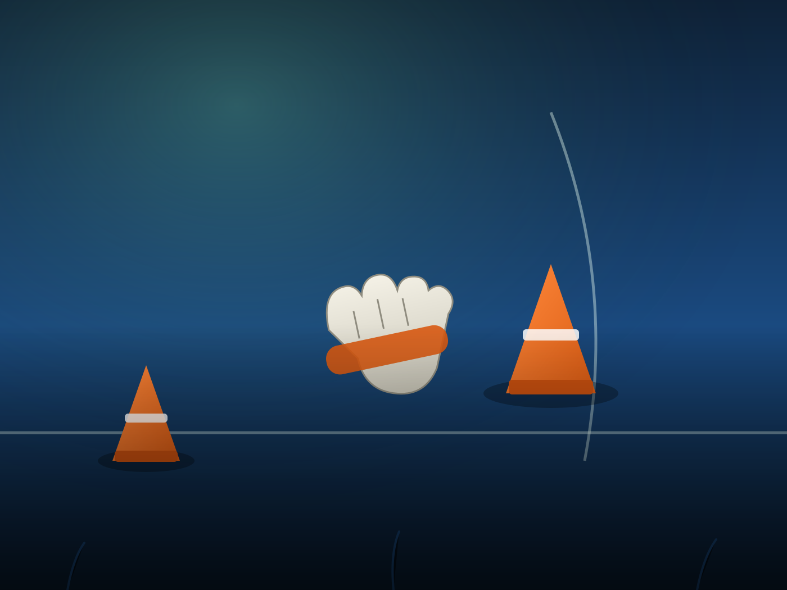
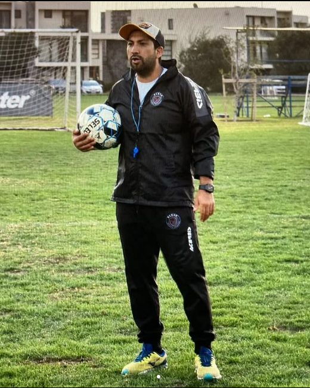
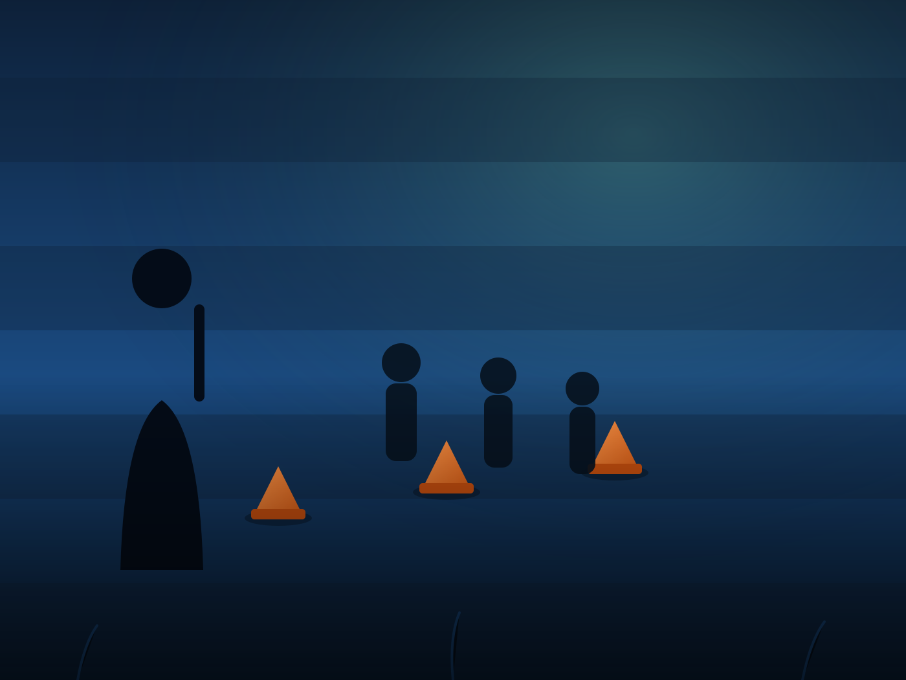
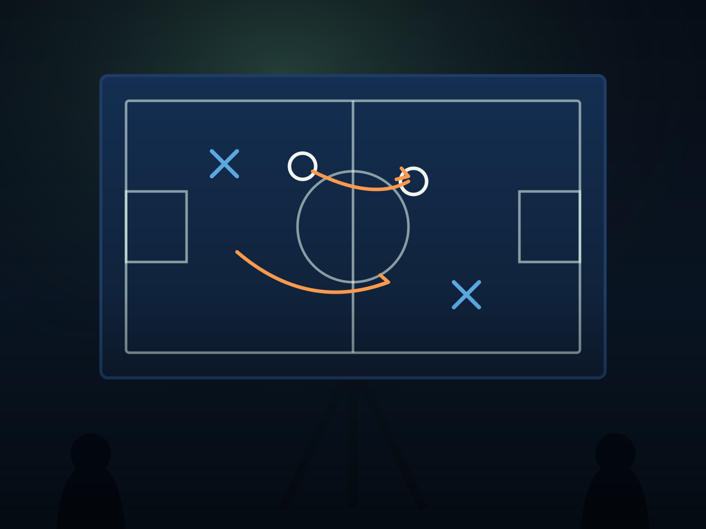

Ojeamiento de talentos
Esta área se enfoca en observar jugadores, analizar sus características y reconocer su potencial futbolístico.
Consultar por scouting
Ojeador de talentos, entrenador de escuelas de fútbol y capacitador
Imágenes de referencia de archivos abiertos. Las fotografías de entrenamientos y charlas de Williams se sumarán aquí.




William trabaja en el fútbol desde tres áreas complementarias: el ojeamiento de talentos, el entrenamiento en escuelas de fútbol y las capacitaciones relacionadas con el juego.
Su enfoque combina la observación del jugador, el desarrollo de sus características y la transmisión de conocimientos a entrenadores y formadores.
El fútbol se observa, se enseña y se desarrolla: cada jugador tiene un potencial por reconocer y un proceso por acompañar.
Tres líneas de acción orientadas a observar, formar y capacitar dentro del fútbol.

Esta área se enfoca en observar jugadores, analizar sus características y reconocer su potencial futbolístico.
Consultar por scouting
Trabajo orientado a la formación futbolística, el entrenamiento y el desarrollo integral de jugadores en el marco de escuelas de fútbol.
Consultar por entrenamientos
Registros de partidos, entrenamientos, escuelas de fútbol y capacitaciones.
Conversa con William para consultar por scouting, entrenamientos o capacitaciones.